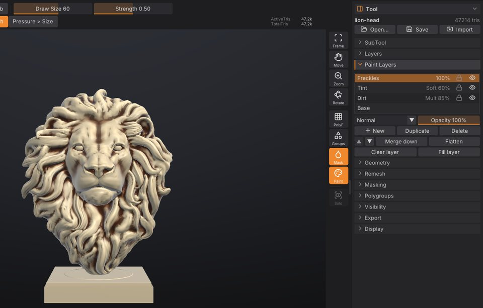

What's new
What changed in each version of SculptForge, newest first, with links to the chapters that explain it. This chapter opens by itself the first time you start a new version; you can always find it again under Help > What's New. Every detail is in the changelog.
Version 0.4.2: texture painting on UV maps#
Paint into a texture instead of the vertices, so the colour detail comes from the texture (1K to 8K), not from the mesh: sharp decals, pores and freckles on a light game mesh.
- Auto UV. Tool > Texture Map > Auto UV unwraps any sculpt in the background. Models that come in with UVs keep them, and now OBJ, FBX, USD and glTF carry UVs in and out too.
- New Texture. Pick a size and click New Texture: the Paint brush, Rgb sculpting, fills, cavity paint and colour picking (C) now work on the texture, with the mask, symmetry, pen pressure and alphas. Strokes never paint through to the far side, and seams stay invisible.
- Vertex or Texture. A toggle on the top shelf chooses where paint goes for each SubTool.
- The same paint layers. Tool > Paint Layers works on the texture's layers: blend modes, opacity, merge, flatten, all undoable.
-
Convert both ways, Show UVs, Import / Export Texture (PNG). Projects save textures and their layers, and model exports write the texture next to the model (OBJ
.mtl, glTF, USD, FBX, GoZ).
See Texture painting.
Version 0.4.1#
A fix for graphics tablets: the brush ring no longer flickers between two places on the model (it looked like a second brush blinking, most often while masking or smoothing). Some tablet drivers, Windows Ink among them, send extra mouse movements beside the pen's; now, while the pen is in range, only the pen moves the brush. See Pen tablets if your pen still misbehaves.
Version 0.4#
Version 0.4 is about making SculptForge feel like home to ZBrush artists. It was shaped by feedback from a working ZBrush modeler and by what sculptors say on the ZBrush and Mudbox forums.
Navigation that works like ZBrush#
- Free rotation. Dragging turns the model the way the cursor moves and can roll it right over the top, as in ZBrush. If you prefer the model to stay upright, set Preferences > Interface > Rotation to Turntable.
- Snap to a view. Hold Shift while rotating to snap to the nearest front, back, side, top or bottom view.
- ZBrush zoom. Alt+drag on the background pans; let go of Alt while still dragging and the rest of the drag zooms. With the right mouse button, Alt pans and Ctrl zooms.
See Navigating the view.
Mask and isolate with a lasso or rectangle#
- MaskLasso and MaskRect. Pick the shape at the top of Tool > Masking, then Ctrl+drag to mask everything inside it; add Alt to unmask. The drag can start on the model or beside it.
- SelectLasso. In Tool > Visibility, pick SelectLasso next to SelectRect, then Ctrl+Shift+drag a free-hand shape to keep only what's inside (add Alt to hide it instead).
See Mask with a lasso or rectangle and Polygroups and visibility.
A material made for sculpting#
The new Sculpt material is the default: plain clay under a strong key light, with crisp highlights and deep shading in the creases, so even small strokes stay easy to read. The other materials are still in the material picker (M), and projects keep the material they were saved with. See Polypaint and materials.
Quads stay quads#
Models you bring in from ZBrush (GoZ) or as OBJ, FBX, PLY or USD keep their quads: PolyF shows them as quads, and exporting writes them back as quads. Subdivide turns each quad into four, voxel remesh now gives an even grid of quads (like DynaMesh), and new cubes and planes are made of quads. See Quads and triangles.
Paint layers#
Polypaint now has layers, like Photoshop: each SubTool can have a stack of colour layers with their own opacity, visibility, lock and blend mode (Multiply, Screen, Overlay, Soft Light, Add and more). Painting on a layer never destroys what's underneath, and you can merge, flatten, duplicate and reorder layers. ZBrush has never had this. Find it in Tool > Paint Layers, and see Paint layers.


Easier to install#
The download links now always get the newest version, and there are one-command installers for Windows, macOS and Linux.
Version 0.3#
- SubTools: several separate meshes in one scene. Append, duplicate, split, merge, solo, and Alt+click to select. See SubTools.
- A ZBrush-style interface: shelves around the canvas, alphabetical palettes, the LightBox (,), the brush, stroke, alpha and material pickers, hold-Ctrl help on every control and a command palette (F3). See The interface.
- Graphics tablets: pen pressure, the eraser end and pen buttons. See Sculpting and brushes.
- A brush library with brush codes to share and a community gallery. See Brush Lab and sharing brushes.
- ComfyUI workflows for image and text to 3D. See Image and text to 3D.
- This user guide, built into the app (Help > User Guide, Shift+F1).
Version 0.2#
- Masking, polygroups and visibility, and polypaint with MatCaps.
- New brushes: DamStandard, ClayBuildup, SnakeHook, Trim, Layer and Nudge, with strokes and alphas.
- Project files with autosave, recent files and QuickSave, and GoZ exchange with ZBrush.
Version 0.1#
The first release: sculpting with symmetry and sculpt layers, voxel remesh and decimation, game-ready LOD chains and Send to Unreal, image and text to 3D with free AI models, Gaussian splats, OpenUSD, and scripting from the command line, Python and AI agents.